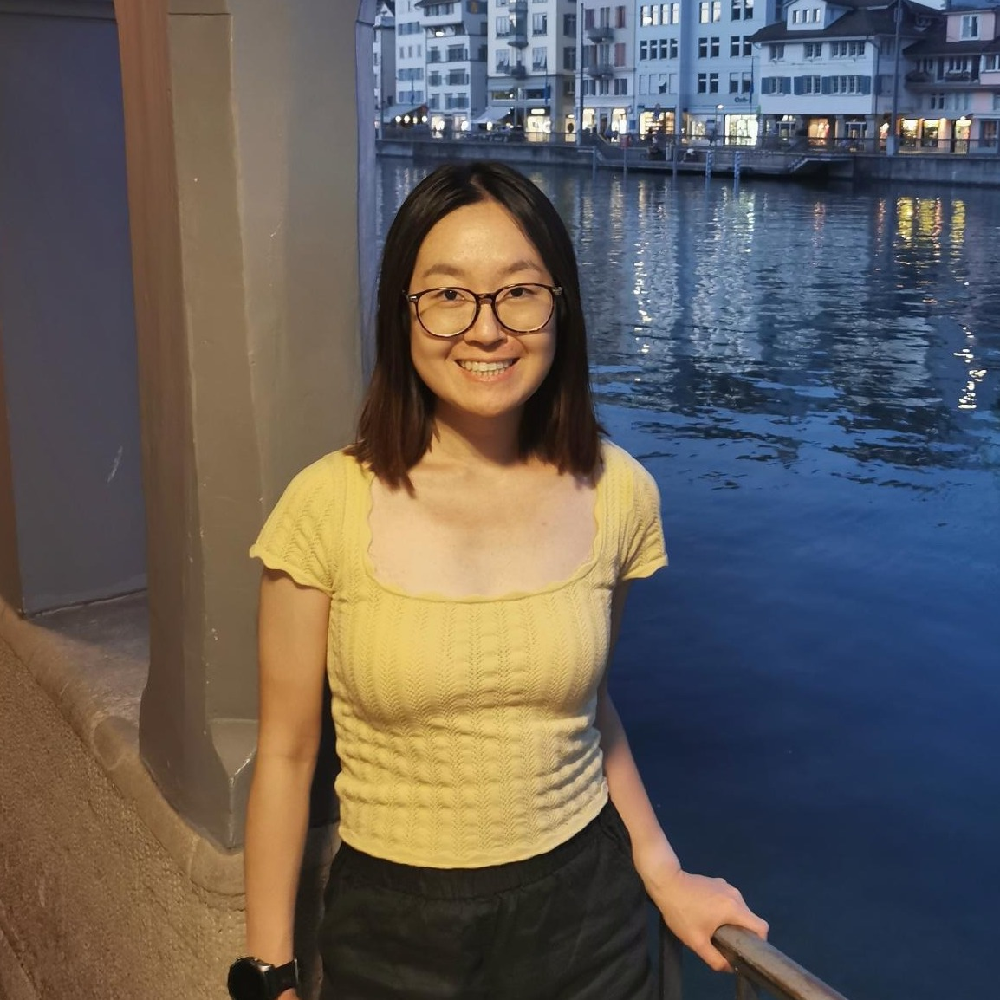

Shimeng Huang
Hi, my name is Shimeng. I’m currently a PhD candidate in Statistics at the University of Copenhagen under the supervision of Niklas Pfister and Jonas Peters. I’m a member of the Copenhagen Causality Lab (CoCaLa).
News
- 🎉 I’ll join as a postdoc at the Institute of Science and Technology Austria (ISTA) working with Francesco Locatello and Matthew Robinson in Feb. 2025!
- 📙 I submitted my PhD thesis in Dec. 2024 and it is now publicly available!
- 🧬 I completed a research internship at Novo Nordisk (Apr.-Aug. 2024) in Copenhagen, Denmark.
- 💡 I finished a data scientist internship with Google France (Sep.-Nov. 2023) in Paris, France.